概述：本文是基于伪装PEB 进行越权复制文件相关学习研究进行的拓展文章，主要记录通过 COM 组件越权复制文件。
[toc]
本篇博客参考的文章较多，然而这些文章也只是其中的一个点或者两个点进行描述，并不详细。这里就不一一罗列了，本文较多内容都是笔者结合相关文章贴上的，相信你看此一篇就可！
主要内容：描述和记录一下伪装 PEB 进行越权复制时，Windows 是如何处理这一系列过程的。
伪装 PEB 进行越权复制
不妨先从最基本的说起，伪装 PEB 并不是将整个 PEB 内容都改写，而是对其中的几处内容进行修改以达到越权目的。
伪装 PEB
主要操作就是修改当前进程的 ImagePathName 、 CommandLine、 FullDllName 、BaseDllName 这几个变量，通过修改成为与系统可信的进程一样的内容进而实现越权操作。3gstudent 提供了 Demo，可以去 Github 看下相关逻辑，这里不做过多解释。
- _RTL_USER_PROCESS_PARAMETERS.ImagePathName
- _RTL_USER_PROCESS_PARAMETERS.CommandLine(可选)
- _LDR_DATA_TABLE_ENTRY.FullDllName
- _LDR_DATA_TABLE_ENTRY.BaseDllName
原理：COM 组件通过 Process Status API (PSAPI) 读取进程 PEB 结构中的 Commandline 来识别它们正在运行的进程。如果将 PEB 中的信息修改为可信文件(如 explorer.exe)，就能够欺骗 PSAPI，例如调用 COM 组件 IFileOperation 实现越权复制这一操作。
PSAPI：进程状态 API，主要提供用于检索一下信息的函数集：
- 进程信息 如 enumProcesses](https://learn.microsoft.com/zh-cn/windows/desktop/api/Psapi/nf-psapi-enumprocesses)、[GetModuleFileNameW](https://learn.microsoft.com/zh-cn/windows/win32/api/libloaderapi/nf-libloaderapi-getmodulefilenamew)
- 模块信息 如 EnumProcessModules
- 设备驱动程序信息 如 EnumDeviceDrivers
- 进程内存使用情况信息 如 GetProcessMemoryInfo
- 工作集信息 如 QueryWorkingSet
- 内存映射文件信息 如 GetMappedFileName
调试说明
调试环境说明
本文基于上述代码编译并调试，后文所述伪装进程即为当前源码编译产物。
为了便于调试，可以先看下本文提及的 @脚本文件
查看对应的服务
以下是双机调试过程可能有帮助于调试的 Windbg 命令，后文中内核调试查找相关 RPC 服务时会用到：
# 查看 AppInfo 对应的服务
!process /m appinfo.dll 0 0 svchost.exe
# 查看 rpcss 对应的服务
!process /m RpcEpMap.dll 0 0 svchost.exe
# 查看 RPC 被调用的函数
bu RPCRT4!Invoke+0x73-2d ".echo '-->RPCRT4:';u r10 l5;gc"
# 设置内核断点
sxr;
!gflag -ksl
!gflag +ksl;
sxe cpr consent.exe;sxe ld consent.exe
# 查看伪装进程
!process 0 0 MasqueradePEBtoCopyfile.exe
# 伪装进程的相关断点
bm combase!connect
# 侵入式调试
.process /p EPROCESS
.reload /f /user
.process /p /i EPROCESS调试思路
windbg 时间旅行
调试说明
- 伪装进程：调试伪装进程的相关逻辑时，建议在目标机器上使用用户态的调试模式，建议使用
Time Travel对伪装进程调试- 相关服务：调试完伪装进程的相关逻辑之后，后续 RPC 的处理，UAC 弹窗Token 读写的操作建议双机调试。
确认调用流程
在不了解任何相关调用流程的情况下，对伪装进程如何发起UAC，需要在用户态对伪装进程进行调试并查看堆栈，得到初步的调用关系如下所示：
[0x0] RPCRT4!LRPC_BASE_CCALL::DoAsyncSend+0x21c 0xbddbc4 0x76538061
[0x1] RPCRT4!LRPC_CCALL::AsyncSend+0x61 0xbddc48 0x7653796e
[0x2] RPCRT4!I_RpcSend+0x7e 0xbddc64 0x75dda34a
[0x3] combase!CAsyncCall::RpcSendRequest+0xaf 0xbddc8c 0x75e59faa
[0x4] combase!ThreadSendReceive+0xa4f 0xbdddd0 0x75dd77f8
[0x5] combase!CSyncClientCall::SwitchAptAndDispatchCall+0xadb 0xbdddd0 0x75dd77f8
[0x6] combase!CSyncClientCall::SendReceive2+0xbca 0xbdddd0 0x75dd77f8
[0x7] combase!SyncClientCallRetryContext::SendReceiveWithRetry+0x29 0xbddfa8 0x75e5c0a7
[0x8] combase!CSyncClientCall::SendReceiveInRetryContext+0x29 0xbddfa8 0x75e5c0a7
[0x9] combase!ClassicSTAThreadSendReceive+0x98 0xbddfa8 0x75e5c0a7
[0xa] combase!CSyncClientCall::SendReceive+0x2a7 0xbde06c 0x75de0468
[0xb] combase!CClientChannel::SendReceive+0x79 0xbde258 0x76516b23
[0xc] combase!NdrExtpProxySendReceive+0xc8 0xbde258 0x76516b23
[0xd] RPCRT4!NdrClientCall2+0x9e3 0xbde280 0x75eaeaa0
[0xe] combase!ObjectStublessClient+0x70 0xbde6d0 0x75ea6a3f
[0xf] combase!ObjectStubless+0xf 0xbde6f0 0x75e113f5
[0x10] combase!CRpcResolver::DelegateActivationToSCM+0x30e 0xbde700 0x75e8c69c
[0x11] combase!CRpcResolver::CreateInstance+0x14 0xbde80c 0x75e12d54
[0x12] combase!CClientContextActivator::CreateInstance+0x144 0xbde828 0x75e124d4
[0x13] combase!ActivationPropertiesIn::DelegateCreateInstance+0xc4 0xbdea88 0x75e3a762
[0x14] combase!ICoCreateInstanceEx+0xc12 0xbdead4 0x75e399d1
[0x15] combase!CComActivator::DoCreateInstance+0x231 0xbdedd8 0x75f4bec1
[0x16] combase!CComActivator::StandardCreateInstance+0x81 0xbdeecc 0x75ba8686
[0x17] ole32!CLUAMoniker::CreateInstance+0x126 0xbdf73c 0x63e8f20f
[0x18] comsvcs!CNewMoniker::BindToObject+0x12f 0xbdf77c 0x75b869cd
[0x19] ole32!CCompositeMoniker::BindToObject+0x19d 0xbdf7f8 0x75b84f9e
[0x1a] ole32!CoGetObject+0xbe 0xbdf82c 0x74e70e88
[0x1b] windows_storage!CoCreateInstanceAsAdmin+0xb2 0xbdf878 0x74e7e364
[0x1c] windows_storage!CFileOperation::_CreateElevatedCopyengine+0x43 0xbdfb80 0x74e8293a
[0x1d] windows_storage!CFileOperation::_RunElevatedOperation+0x4d 0xbdfbf4 0x74ce1761
[0x1e] windows_storage!CFileOperation::_ProcessLUAOperations+0x118056 0xbdfc28 0x74bc878a
[0x1f] windows_storage!CFileOperation::PrepareAndDoOperations+0x238 0xbdfc7c 0x74bc2274
[0x20] windows_storage!CFileOperation::PerformOperations+0xd4 0xbdfcec 0xa03f55
[0x21] MasqueradePEBtoCopyfile!wmain+0x365 0xbdfd1c 0xa047fe观察堆栈，了解大致的调用之后（需要对 RPC 的调用有相关了解），可以在 NdrClientCall2() 处添加断点，然后调用dbgtools.js) 中 !NdrClientCall2 方法来解析当前 RPC 是要调用哪个 RPC 的哪个接口。
// 需要提前加载调试脚本
bu RPCRT4!NdrClientCall2 "!NdrClientCall2"详细调试步骤
第一次 UAC
这一部分内容为纯调试过程。基于我之前的学习过程，对一部分过程已经有了了解的基础上。与本节之后的内容有重合部分。
查看伪装发起的调用
客户端（也就是伪装进程）获取 发起 UAC 鉴权的进程 的相关信息（包括进程的 ImagePath、CommandLine），然后调用 RPC 去执行下一步操作
-
windbg 运行目标程序，添加断点，因为已经多次调试这个程序了，这里就简要记录下
经验之谈
随着调试技术的熟练。我们只需要观察
NdrClientCall2()的调用，再通过堆栈就能找到如下所示的调用。
# 打开日志文件
.logopen C:\windbg.log
# 前文 NdrClientCall2 断点触发后输出如下所示：
dbgtools> Run !dbgtools show help
0:000> !NdrClientCall2
Fri Nov 1 11:54:56.201 2024 (UTC + 8:00) NdrClientCall2() Stack
[RPC] Request Function: combase!Connect + 0xa8
[RPC] Caller Info:
Name:MasqueradePEBtoCopyfile.exe
PID:1828
Command:C:\windows\explorer.exe
[RPC] GUID
[RPC] GUID&Procederes: {e60c73e6-88f9-11cf-9af1-0020af6e72f4}:0
@$NdrClientCall2()误入歧途
2. ❌ 这里开始找到的 COM 对象都不对，直接跳转到第 7 步。 创建完 COM 对象之后会首次触发断点，查看 CLSID，值为 `{9ac9fbe1-e0a2-4ad6-b4ee-e212013ea917}`，对应的 com 对象如下所示：  3. 继续执行会触发第二次 CocreateInstanceEx 断点，查看 CLSID，值为 `{f0ae1542-f497-484b-a175-a20db09144ba}`, 对应的对象如下所示：  4. 继续执行触发第四次断点，查看 CLSID, 值为 `{cdc82860-468d-4d4e-b7e7-c298ff23ab2c}`  5. 到这里基本就是 windows. storage.dll 的互调了，添加 rpc 断点 ``` bp RPCRT4!NdrClientCall2 ``` rpc 断点触发后查看 CoCreateInstanceEx 创建的 COM 对象是哪个 示例如下： 堆栈如上，查看创建的 COM 对象是哪个：dds 023dfaf4
#输出如下所示：
0:003> dds 023dfaf4
023dfaf4 023dfb30
023dfaf8 746b3c80 windows_storage!CSearchIndexNotificationQueue::s_FlushNotificationQueueThreadProc+0x50
023dfafc 74629444 windows_storage!_GUID_9e175b6d_f52a_11d8_b9a5_505054503030
023dfb00 00000000
023dfb04 00000017
023dfb08 74629454 windows_storage!_GUID_a5eba07a_dae8_4d15_b12f_728efd8a9866
023dfb0c 023dfb18
023dfb10 02291780查看 74629444 和 74629454 对应的 COM 对象：
{9E175B6D-F52A-11D8-B9A5-505054503030}{A5EBA07A-DAE8-4D15-B12F-728EFD8A9866}
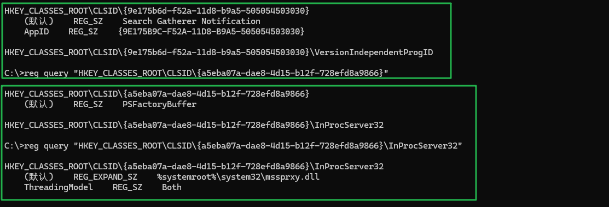
-
到这里就看到请求的服务是 SearchIndexer 了，调试下 SearchIndexer
c# 打开日志 .logopen /t c:\logs\mylogfile.txt bu RPCRT4!Invoke+0x73-2d "u r10 l5;gc"
中间步骤的调试结果就是找错方向了，浪费了太多精力。伪装进程并不是通过创建 COM 对象来传递数据的。而是通过如下所示的堆栈，准确地说，是通过 combase!connect（Win11） 这个接口，在 Win11 操作系统上已经将这个接口改动到 Lambda 表达式中。结合我在一些错误尝试之后写的脚本，重新梳理下。
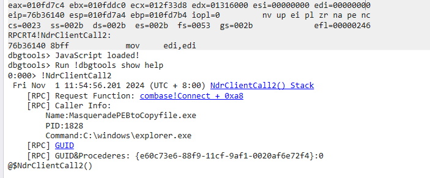
借助 RpcView 分析接口
上述第一步已经看到了 RPC 调用的 GUID 和 接口ID 为 {e60c73e6-88f9-11cf-9af1-0020af6e72f4}:0，直接在 RpcView查看调用的是谁：
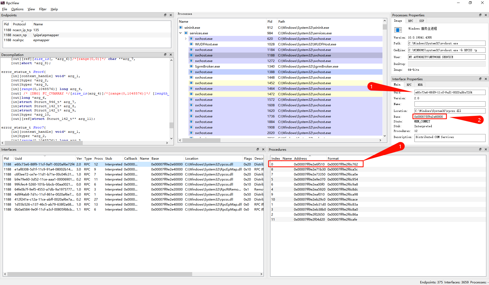
查看接口
通过 RpcView 可以看到调用了 rpcss.dll 中偏移为 F510 处的函数 Connect
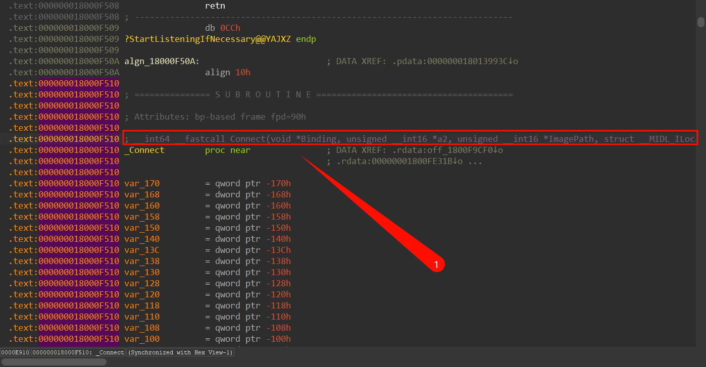
查找伪装进程调用接口
connect 函数说明
RPC 调用时，客户端最后调用哪个，服务端最先就会调用哪个。
RPC 调用时，客户端发起接口和服务端响应接口基本上是同名的。所以在客户端查找对应的接口有哪些就行
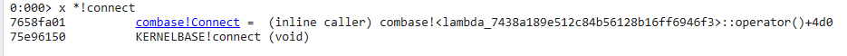
这里就不用两个都看了，combase!Connect 无疑，在 IDA 中查看 combase!Connect 。这里由于 combase!Connect 的调用方式是 inline caller 并且是 lambda 表达式，所以直接通过 IDA 查找函数名是没有结果的，需要在 combase!Connect 下断点，并在触发时查看堆栈。
# 添加断点
bm combase!connect
# 断点触发时查看堆栈
0:000> kcn
#
00 combase!Connect
01 combase!<lambda_7438a189e512c84b56128b16ff6946f3>::operator()
02 combase!CRpcResolver::GetConnection
03 combase!CoInitializeSecurity
04 combase!InitializeSecurity
05 combase!CComApartment::InitRemoting
06 combase!CComApartment::StartServer
07 combase!InitChannelIfNecessary
08 combase!CGIPTable::RegisterInterfaceInGlobalHlp
09 combase!CGIPTable::RegisterInterfaceInGlobal
0a windows_storage!CFreeThreadedItemContainer::Initialize
0b windows_storage!CFSPropertyStoreFactory_CreateInstance
0c windows_storage!CFSFolder::_BindToChild
0d windows_storage!CFSFolder::_Bind
0e windows_storage!CFSFolder::BindToObject
0f windows_storage!CShellItem::BindToHandler
10 windows_storage!CShellItem::_GetPropertyStoreWorker
11 windows_storage!CShellItem::GetPropertyStoreForKeys
12 windows_storage!CShellItem::GetString
13 windows_storage!IShellItem_GetFileName
14 windows_storage!CPendingOperation::AddToTree
15 windows_storage!CCopyTree::InitializeFromPendingList
16 windows_storage!CFileOperation::PerformOperations可以看到是通过 CRpcResolver::GetConnection 调用到 Connect 接口。
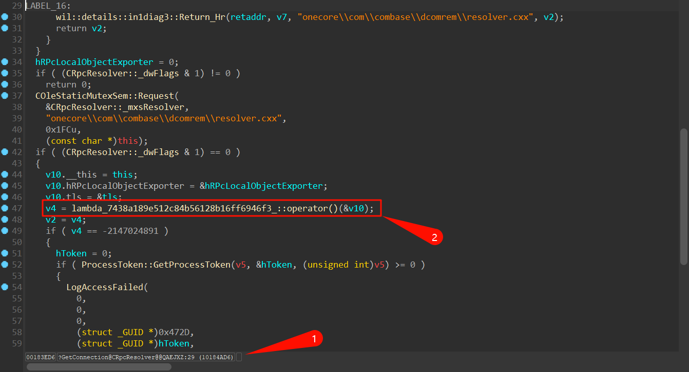
如下所示这张 IDA 的截图，正是 RPC 发起的起点，在 Lambda 函数接口内，通过 _NdrClientCall4 的调用发起 RPC 请求，并且传入了参数，参数 szExePath 即通过 GetModuleFileNameW 获取的伪装进程的伪装路径。
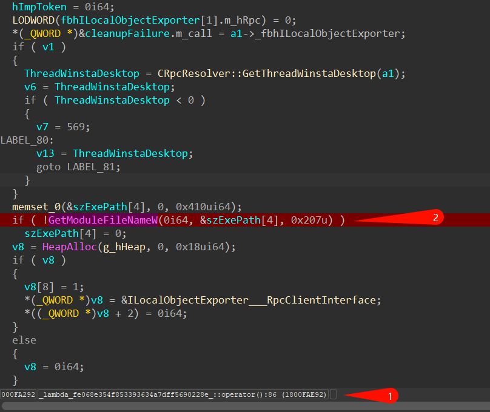
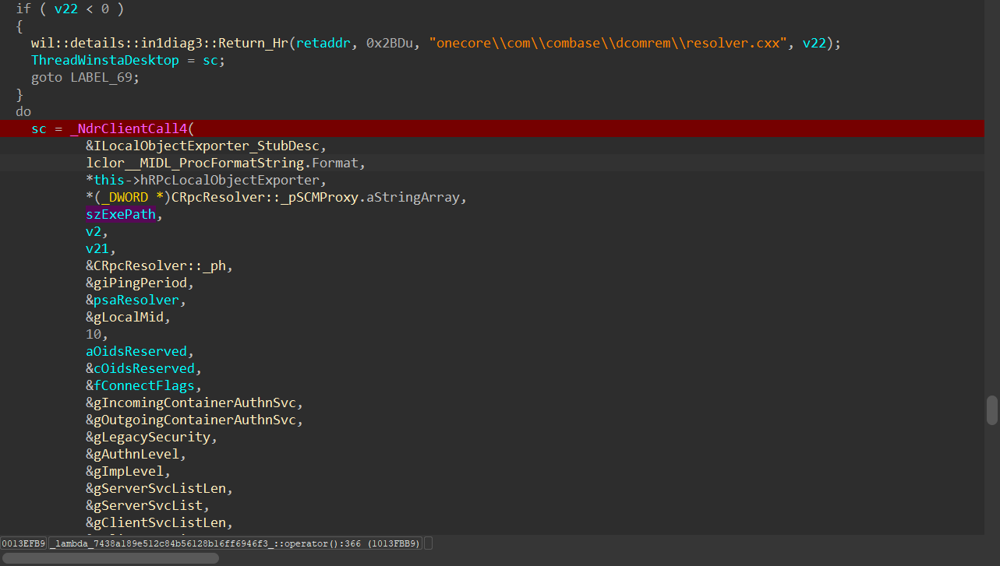
至此，客户端发起 RPC 调用的逻辑理顺了。
lambda 函数说明
combase!Connect，最终由 RPCSS 服务中的rpcss!_Connect接口完成本次 RPC 调用。这里虽然调用的是 combase 中的 lambda 接口，最终还是会通过 inline call 的方式调用到
另外就是在 IDA 并不能直接看到
Connect函数Lambda表达式）。需要触发断点后查看调用堆栈再去 IDA 查找 Connect 函数。后文有相关堆栈，这里先补充下是从哪个函数调用过去的：
combase!CRpcResolver::GetConnection
关于如何确定是通过
combase!connect接口可以看下文章RPC) ，这篇文章专门以本实例做演示，介绍了相关原理，并说明了如何查找 RPC 服务端及调用接口。
到这里就可以结合 IDA，就可以看到 connect 函数传递了哪些内容了。
combase!connect 函数入参相当多了。这里主要关注进程伪装的参数是如何传递的。
小节总结
这一小节伪装进程发起的调用到了由 rpcss.dll 持有的 rpc 接口，接口名为
Connect。
查看 rpcss 的处理
在 RpcView 的截图中可以看到，rpcss.dll 是在 svchost 进程中，svchost 是系统服务进程，那么调试 rpcss 则最好是内核调试状态下。
调试准备
# rpcss 相关断点
bu rpcss!_Connect ".echo 'rpcss!_Connect Para3:';du @r8;"
bp ole32!CoAicGetTokenForCOM
bp ole32!CoAicGetTokenForCOM+0x69查看 rpcss!connect 接口
-
在上一小节部分，我们已经看到了伪装进程通过 rpc 最终调用到了 rpcss 服务中的
_Connect接口。那在rpcss!_Connect接口中，通过 IDA 的反汇编可以看到，又通过CProcess::CProcess来创建了一个进程（猜测）。从 rpcss 到 appinfo 的过程比较复杂，这里还是观察NdrClientCall2接口吧。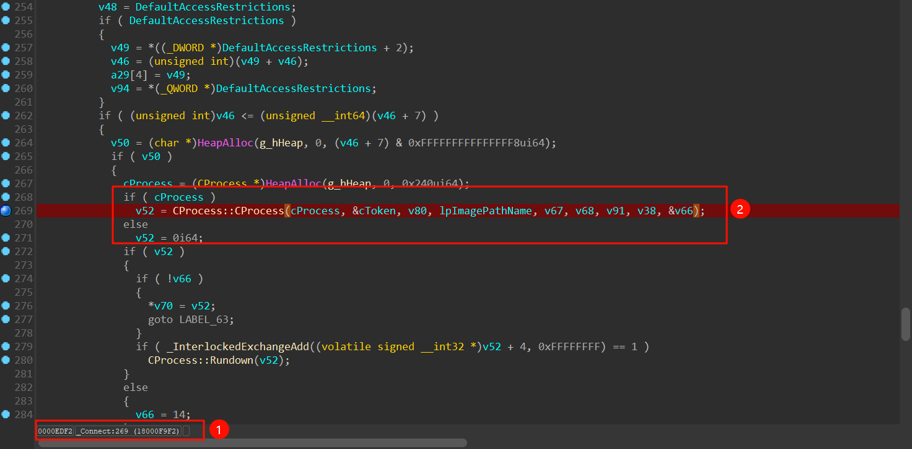
-
CProcess构造函数cppCProcess *__fastcall CProcess::CProcess( CProcess *this, struct CToken **a2, const unsigned __int16 *a3, const unsigned __int16 *lpImagePathName, __int64 a5, unsigned int a6, struct __MIDL_ILocalObjectExporter_0001 *a7, RPC_BINDING_HANDLE Binding, int *a9)
开始调试
便于观察，可以在 CProcess::CProcess 接口处下断点。如果基于要学习的目的，可以在 rpcss::_Connect 接口处下断点，当 CProcess::CProcess 断点触发时，可以观察下相关信息：
# 堆栈
0: kd> kcn 4
# Call Site
00 rpcss!CProcess::CProcess
01 rpcss!_Connect+0x4e7
02 RPCRT4!Invoke+0x73
03 RPCRT4!NdrStubCall2Heap+0x342
# 查看参数3和参数4
0: kd> dU @r8
00000187`d8f4b3e8 "WinSta0\Default"
0: kd> dU @r9
00000187`d8f4b418 "C:\Windows\system32\consent.exe"- 而
rpcss最终调用CoAicGetTokenForCOM向AppInfo发起调用，堆栈如下所示
1: kd> kcn
# Call Site
00 ole32!CoAicGetTokenForCOM
ole32!CoAicGetTokenForCOM+0x69 添加权限查看 Token 更明显，地址没变，但是地址内句柄指向的 Token 权限增加了
01 rpcss!ActivateFromPropertiesPreamble+0x1f7b
01 retAddr rpcss!ActivateFromPropertiesPreamble+0x1f82 # 可以在此处添加断点观察前后的参数4，查看Token权限变化
02 rpcss!PerformScmStage
03 rpcss!SCMActivatorCreateInstance
04 RPCRT4!Invoke
05 RPCRT4!NdrStubCall2Heap
06 RPCRT4!NdrStubCall2
07 RPCRT4!NdrServerCall2
08 RPCRT4!DispatchToStubInCNoAvrf
09 RPCRT4!RPC_INTERFACE::DispatchToStubWorker
0a RPCRT4!RPC_INTERFACE::DispatchToStub
0b RPCRT4!LRPC_SCALL::DispatchRequest
0c RPCRT4!LRPC_SCALL::HandleRequest
0d RPCRT4!LRPC_ADDRESS::HandleRequest
RPCRT4!LRPC_ADDRESS::HandleRequest+0x341 "dt _PORT_MESSAGE @rbp" # 在此处添加断点可以查看发起请求的客户端
0e RPCRT4!LRPC_ADDRESS::ProcessIO
0f RPCRT4!LrpcIoComplete
10 ntdll!TppAlpcpExecuteCallback
11 ntdll!TppWorkerThread
12 KERNEL32!BaseThreadInitThunk
13 ntdll!RtlUserThreadStart观察上述堆栈可以看到在 rpcss 中，最先调用的时 rpcss!SCMActivatorCreateInstance，也就是客户端最开始发起的接口是这个。在 RPCRT4!LRPC_ADDRESS::HandleRequest+0x341 查看发起调用的客户端。
从 CoAicGetTokenForCom 函数开始，观察 NdrClientCall2 发送的请求，可以看到 RPC 请求到了 appinfo.dll 的接口。
查看 appinfo 的处理
调式准备
# appinfo 断点
bp appinfo!RAiGetTokenForCOM
bp appinfo!AiBuildCOMParams
bp appinfo!AipGetTokenForService
bp appinfo!AiGetClientInformation
bp appinfo!AiCheckLUA
bp appinfo!AiLaunchConsentUI
bp appinfo!AiLaunchProcess
bp appinfo!AiCheckSecureApplicationDirectory开始调试
查找调用线程
根据上一小节的内容，此时已经执行到了 Appinfo 所在的进程。查看 appinfo 所在进程的所有线程，查找相关线程：
# 这里会输出所有线程的堆栈信息 ffffa18d9265a2c0
!process ffffa18d9265a2c0 7
# 找相关的那个就行，如下所示，搜索 consent
THREAD ffffa18d92e95080 Cid 02a0.0aac [[【WIN】TEB(线程环境块)|TEB]]: 0000008049ae2000 Win32Thread: ffffa18d92eb12d0 WAIT: (UserRequest) UserMode Non-Alertable
ffffa18d94034080 ProcessObject
Not impersonating
DeviceMap ffffdf048f637420
Owning Process ffffa18d9265a2c0 Image: svchost.exe
Attached Process N/A Image: N/A
Wait Start TickCount 28038 Ticks: 25 (0:00:00:00.390)
Context Switch Count 3626 IdealProcessor: 1
UserTime 00:00:00.015
KernelTime 00:00:00.375
Win32 Start Address ntdll!TppWorkerThread (0x00007ffdc99a2b30)
Stack Init ffff9c8af4a45c90 Current ffff9c8af4a456a0
Base ffff9c8af4a46000 Limit ffff9c8af4a40000 Call 0000000000000000
Priority 9 BasePriority 8 IoPriority 2 PagePriority 5
Child-SP RetAddr : Args to Child : Call Site
ffff9c8a`f4a456e0 fffff801`7f455330 : ffffa18d`00000008 00000000`ffffffff ffff9c8a`00000000 ffffa18d`95631158 : nt!KiSwapContext+0x76
ffff9c8a`f4a45820 fffff801`7f45485f : 00000000`00000000 00000000`00000000 ffff9c8a`f4a459e0 00000000`00000000 : nt!KiSwapThread+0x500
ffff9c8a`f4a458d0 fffff801`7f454103 : 00000000`00000000 fffff801`00000000 00000000`00000000 ffffa18d`92e951c0 : nt!KiCommitThreadWait+0x14f
ffff9c8a`f4a45970 fffff801`7f858dd1 : ffffa18d`94034080 fffff801`00000006 ffff9c8a`f4a45b01 ffff9c8a`f4a45b00 : nt!KeWaitForSingleObject+0x233
ffff9c8a`f4a45a60 fffff801`7f858d2a : ffffa18d`92e95080 00000000`00000000 00000000`00000000 00000000`00000000 : nt!ObWaitForSingleObject+0x91
ffff9c8a`f4a45ac0 fffff801`7f624ef5 : ffffa18d`92e90000 00000000`00001000 00000000`00000000 00000000`00000000 : nt!NtWaitForSingleObject+0x6a
ffff9c8a`f4a45b00 00007ffd`c99ed064 : 00007ffd`c72730ce 00000000`00000022 00000023`00000004 00000004`00000000 : nt!KiSystemServiceCopyEnd+0x25 (TrapFrame @ ffff9c8a`f4a45b00)
00000080`4be7e5b8 00007ffd`c72730ce : 00000000`00000022 00000023`00000004 00000004`00000000 00000000`00000024 : ntdll!NtWaitForSingleObject+0x14
00000080`4be7e5c0 00007ffd`99a178d9 : 00000000`00000000 00000000`00000001 00000080`00000000 00000000`00002508 : KERNELBASE!WaitForSingleObjectEx+0x8e
00000080`4be7e660 00007ffd`99a171e3 : 00000000`00000000 0000024c`d154cfa0 00000000`00000000 00000000`00000004 : appinfo!AiLaunchConsentUI+0x559
00000080`4be7e880 00007ffd`99a32ff1 : 00000000`00000002 00000000`00002568 00000000`00004000 00000000`00000002 : appinfo!AiCheckLUA+0x343
00000080`4be7ea60 00007ffd`99a339b6 : 0000024c`d428c760 0000024c`d428c810 0000024c`d428c810 0000024c`d0f7ac08 : appinfo!AipGetTokenForService+0x245
00000080`4be7eb80 00007ffd`c7f4b4b3 : 0000024c`d3236b80 0000024c`d2f71de0 00000000`00000000 00000000`00000002 : appinfo!RAiGetTokenForCOM+0x206
00000080`4be7ec40 00007ffd`c7fac5ea : 0000024c`d3236b80 0000024c`d00f9320 0000024c`d0f7a8e0 00007ffd`99a35e30 : RPCRT4!Invoke+0x73从上述堆栈可以看到最先开始调用的接口为appinfo!RAiGetTokenForCOM，并且是通过 RPC 调用进来的。 最后调用的函数为 appinfo!AiLaunchConsentUI，appinfo 最后的处理则是调用通过 AiLaunchProcess 如下所示：
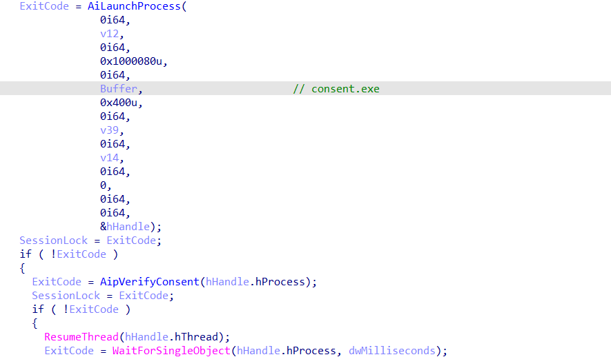
Buffer 内容如下所示
- 参数1：创建 consent 进程的PID
- 参数2：传入参数的大小和当前进程的句柄
- 参数3：传入参数的地址，对应结构体为
_CONSENTUI_PARAM_HEADER，包含了 com地址PE文件路径、GUID、Token等信息
下一步就是调试 consent.exe 了。
AppInfo 封装参数
appinfo 的另外一个作用就是将请求客户端的信息进行封装（封装到 _CONSENTUI_PARAM_HEADER）并传递到 consent.exe。其中后文提到的 Token 也是通过 appinfo!AiGetClientInformation 获取的。
如下所示为封装 token 等一部分参数：
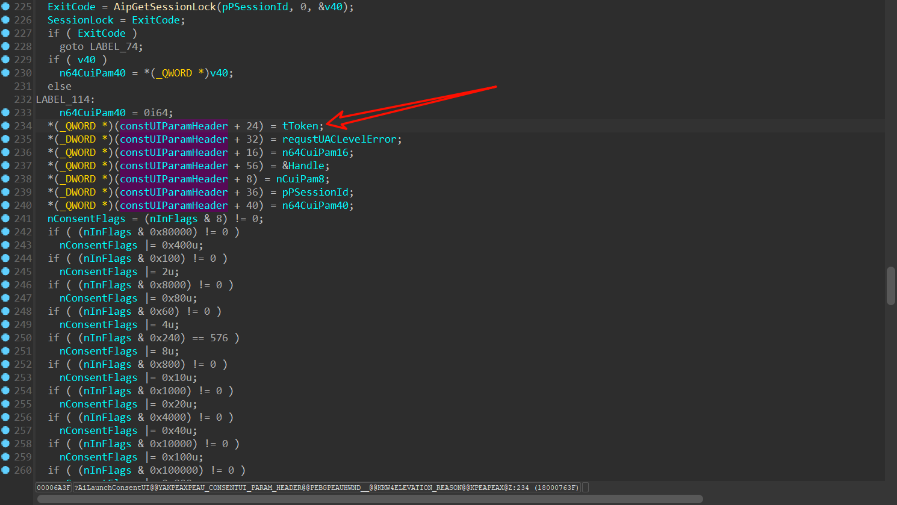
在封装的参数中，同时包含了一个传入的 Token，位于 _CONSENTUI_PARAM_HEADER+0n24 处，该 Token 是调用 AiGetClientInformation 获取的，下图 LINE81，这个Token 也是后文关键，伪装进程传出的 Token 是基于这个传入 Token 复制：
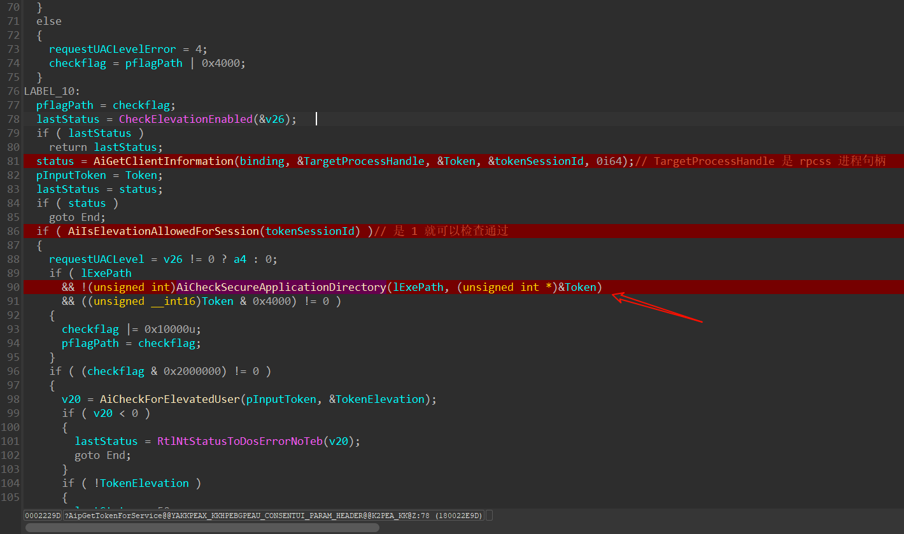
AiCheckSecureAPPLicationDirectory 验证的路径主要如下所示：
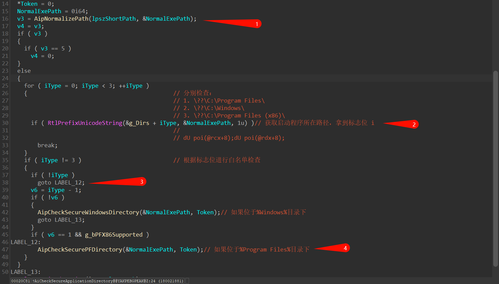
获取 RPC 客户端信息
AiGetClientInformation 获取发起方 Token，在这个接口中可以看到 RPC 客户端是哪个进程：
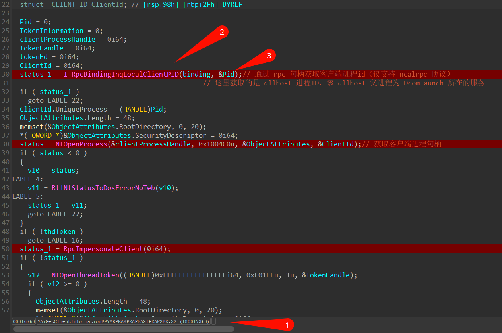
在 I_RpcBindInqLocalClientPID 调用后查看获取到的 PID：
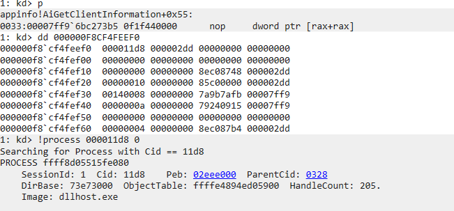
可以看到是由 dllhost.exe 发起：
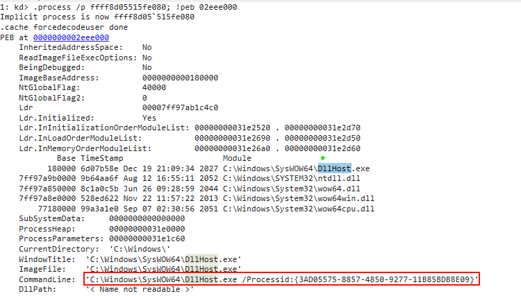
提示
所以这里就可以确定是由
DllHost调用RAiGetTokenForCOM发起 RPC 请求了。
在获取客户端 PID 后，调用 NtOpenProcess、RpcImpersonateClient、NtOpenThreadToken、NtDuplicateToken(TokenPrimary) 获取到了传入 Token。
补充1
如果要观察传入 consent 的参数前后有什么变化，就可以在如下所示堆栈位置 KERNELBASE!WaitForSingleObjectEx+0x8e 的位置添加断点查看调用 consent 之后传入参数的位置发生了什么变化。
这里可以在 ole32!GetTokenForCom函数尾（ole32!CoAicGetTokenForCOM+0x69）添加断点查看 phNewToken 前后的变换，补充我这边的记录如下所示：
0: kd> kvn
# Child-SP RetAddr : Args to Child : Call Site
00 0000002e`5b07e5f8 00007ff9`1d7610e2 : 000001ff`7f779901 0000002e`5b07e700 000001ff`7fa7bd08 00000000`00000000 : ole32!CoAicGetTokenForCOM [com\ole32\dll\dll.cpp @ 433]
01 0000002e`5b07e600 00007ff9`1d75a209 : 0000002e`5b07ea20 000001ff`000000bc 0000002e`5b07ea20 00000000`00000000 : rpcss!ActivateFromPropertiesPreamble+0x1f82
02 0000002e`5b07e920 00007ff9`1d759046 : 000001ff`7facd5b0 00000000`000000a0 00000000`00000000 00007ff9`1d77f51e : rpcss!PerformScmStage+0xb79
03 0000002e`5b07eae0 00007ff9`21f5b4b3 : 000001ff`7facd5b0 000001ff`7f1f6bf0 000001ff`7fa9a720 000001ff`7fba6970 : rpcss!SCMActivatorCreateInstance+0x1b6
04 0000002e`5b07ee10 00007ff9`21f5a282 : 00007ff9`1d84dd22 000001ff`7fba6790 00000000`00000000 00007ff9`1d84dcee : RPCRT4!Invoke+0x73
05 0000002e`5b07ee90 00007ff9`21efe1ca : 00000000`00000000 00000000`00000000 000001ff`7facd700 0000002e`5b07f188 : RPCRT4!NdrStubCall2Heap+0x342
06 0000002e`5b07f120 00007ff9`21f3dfda : 00000000`00000000 000001ff`7fa119b0 000001ff`7facd700 00007ff9`223305dd : RPCRT4!NdrStubCall2+0x3a
07 0000002e`5b07f150 00007ff9`21f39188 : 000001ff`7ec25c84 000001ff`00000001 000001ff`7facd5b0 00000000`00000000 : RPCRT4!NdrServerCall2+0x1a
08 0000002e`5b07f180 00007ff9`21f1a3a6 : 000001ff`00501100 000001ff`7ec53860 0000002e`5b07f380 00007ff9`2233ae20 : RPCRT4!DispatchToStubInCNoAvrf+0x18
09 0000002e`5b07f1d0 00007ff9`21f19cf8 : 000001ff`7ec53860 00000000`00000000 00000000`00000000 00007ff9`2233cabb : RPCRT4!RPC_INTERFACE::DispatchToStubWorker+0x1a6
0a 0000002e`5b07f2b0 00007ff9`21f274bf : 00000000`00000000 000001ff`0007f1cd 000001ff`7facd5b0 00007ff9`2236bc81 : RPCRT4!RPC_INTERFACE::DispatchToStub+0xf8
0b 0000002e`5b07f320 00007ff9`21f268c8 : 00000000`0008581d 00000000`00000005 00000000`00000000 000001ff`7fa119b0 : RPCRT4!LRPC_SCALL::DispatchRequest+0x31f
0c 0000002e`5b07f3f0 00007ff9`21f25eb1 : 00000000`0000104c 000001ff`7fad0b70 00000000`00000000 000001ff`00000000 : RPCRT4!LRPC_SCALL::HandleRequest+0x7f8
0d 0000002e`5b07f500 00007ff9`21f2591e : 00000000`00000000 00000000`00000000 00000000`00000001 000001ff`7ec20b60 : RPCRT4!LRPC_ADDRESS::HandleRequest+0x341
0e 0000002e`5b07f5a0 00007ff9`21f2a032 : 000001ff`7fa119b0 000001ff`7fa119b0 000001ff`7ec20c68 0000002e`5b07f978 : RPCRT4!LRPC_ADDRESS::ProcessIO+0x89e
0f 0000002e`5b07f6e0 00007ff9`22330330 : 00000001`00000000 00000000`00000000 0000002e`5b07f978 00000000`00000184 : RPCRT4!LrpcIoComplete+0xc2
10 0000002e`5b07f780 00007ff9`22362f86 : 00000000`00000000 000001ff`7ec20d00 00000000`00000000 000001ff`7f196ae0 : ntdll!TppAlpcpExecuteCallback+0x260
11 0000002e`5b07f800 00007ff9`21597344 : 00000000`00000000 00000000`00000000 00000000`00000000 00000000`00000000 : ntdll!TppWorkerThread+0x456
12 0000002e`5b07fb00 00007ff9`223626b1 : 00000000`00000000 00000000`00000000 00000000`00000000 00000000`00000000 : KERNEL32!BaseThreadInitThunk+0x14
13 0000002e`5b07fb30 00000000`00000000 : 00000000`00000000 00000000`00000000 00000000`00000000 00000000`00000000 : ntdll!RtlUserThreadStart+0x21
0: kd> dv /t /v
@rcx struct HWND__ * hwndParent = 0x00000000`00000000
@rdx wchar_t * lpDesktop = 0x000001ff`7fbac4c0 "WinSta0\Default"
@r8 struct _GUID * lpGuid = 0x0000002e`5b07eb6c {3AD05575-8857-4850-9277-11B85BDB8E09}
@r9 wchar_t * lpFriendlyName = 0x000001ff`7faa3120 "文件操作"
0000002e`5b07e620 wchar_t * lpServerBinary = 0x000001ff`7f798250 "C:\Windows\system32\windows.storage.dll"
0000002e`5b07e628 wchar_t * lpIconReference = 0x00007ff9`1d840a88 ""
0000002e`5b07e630 wchar_t * lpRequestorPath = 0x000001ff`7f7cbf10 "C:\windows\explorer.exe"
0000002e`5b07e638 unsigned long dwRunLevel = 2
0000002e`5b07e640 unsigned long dwClientFlags = 0x20
0000002e`5b07e648 int fAdjustTokenSD = 0n1
0000002e`5b07e650 void * hTokenIn = 0x00000000`000011cc
0000002e`5b07e658 void ** phNewToken = 0x0000002e`5b07e6b8
0: kd> bp 0x7ff9205b5199
0: kd> dq 0x0000002e`5b07e6b8
0000002e`5b07e6b8 00000000`00000000 00000000`00000007
0000002e`5b07e6c8 00007ff9`00000000 00000000`00000002
0000002e`5b07e6d8 000001ff`7ebd0000 00000000`00000000
0000002e`5b07e6e8 00007ff9`22317afb 000001ff`7f1f60b0
0000002e`5b07e6f8 000001ff`7fb8e730 0000002e`5b07e440
0000002e`5b07e708 00000000`00000000 000001ff`00001280
0000002e`5b07e718 00007ff9`2233c282 00000000`00000000
0000002e`5b07e728 00000000`00000f38 000001ff`7fb07800
0: kd> g
'rpcss!_Connect Para3:'
000001ff`7f1d8c1c "C:\Windows\system32\consent.exe"
Breakpoint 10 hit
ole32!CoAicGetTokenForCOM+0x69:
0033:00007ff9`205b5199 4883c468 add rsp,68h
1: kd> dq 0x0000002e`5b07e6b8
0000002e`5b07e6b8 00000000`00000e54 00000000`00000007
0000002e`5b07e6c8 00007ff9`00000000 00000000`00000002
0000002e`5b07e6d8 000001ff`7ebd0000 00000000`00000000
0000002e`5b07e6e8 00007ff9`22317afb 000001ff`7f1f60b0
0000002e`5b07e6f8 000001ff`7fb8e730 0000002e`5b07e440
0000002e`5b07e708 00000000`00000000 000001ff`00001280
0000002e`5b07e718 00007ff9`2233c282 00000000`00000000
0000002e`5b07e728 00000000`00000f38 000001ff`7fb07800
1: kd> !handle 00000000`00000e54
PROCESS ffff908328f1e340
SessionId: 0 Cid: 03b4 Peb: 2e5a6aa000 ParentCid: 02bc
DirBase: 13deb000 ObjectTable: ffffc18c8229b280 HandleCount: 1104.
Image: svchost.exe
Handle table at ffffc18c8229b280 with 1104 entries in use
0e54: Object: ffffc18c88330380 GrantedAccess: 000f01ff (Protected) (Audit) Entry: ffffc18c84dff950
Object: ffffc18c88330380 Type: (ffff9083244bfd20) Token
ObjectHeader: ffffc18c88330350 (new version)
HandleCount: 1 PointerCount: 1查看 consent 的处理
调试准备
由于 consent 进程是 svchost 进程创建的，所以需要从内核下断点才可以，在内核从未加载过 consent 进程情况下，执行如下所示命令：
sxr;!gflag -ksl
!gflag +ksl;sxe cpr consent.exe;sxe ld consent.exe如果断点没有生效，则需要重启操作系统，重新设置内核断点。
内核断点触发时输出如下所示，断点触发后添加 consent 断点：
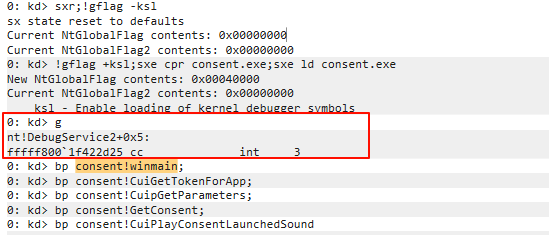
# consent 进程相关断点
bp consent!winmain;
bp consent!CuiGetTokenForApp;
bp consent!CuipGetParameters;
bp consent!GetConsent;
bp consent!CuiPlayConsentLaunchedSound开始调试
观察 consent.exe 的创建。继上一步骤之后，如果对 consent 的创建感兴趣可以按调试准备所述添加断点查看 consent.exe 的创建。
按 F5 继续执行，这时候断点会断在 nt!DebugService2，查看 PEB 确定是否为 consent.exe，在我的环境输出如下所示：
这里也可以观察下是哪个进程创建的 consent 进程，consent 进程的命令行的第一个参数 672 是父进程的PID
consent.exe 672 252 0000024CD154CFA0
# 这个进程就是 appinfo.dll 所在服务，与 !process /m appinfo.dll 0 0 svchost.exe 查找结果一致
1: kd> !process /m appinfo.dll 0 0 svchost.exe
Searching processes with loaded module 'appinfo.dll'
PROCESS ffffa18d9265a2c0
SessionId: 0 Cid: 02a0 Peb: 8049a87000 ParentCid: 02bc
DirBase: 2aa88000 ObjectTable: ffffdf04938e9180 HandleCount: 2313.
Image: svchost.exe查看 consent 命令行参数
在调试 consent 之前先看下
appinfo传入的参数（当前输出为另一次调试后获取的输出），728 对应的是 appinfo 所在的进程0: kd> dx -r1 Debugger.State.Scripts.CodeFlow.Contents.host.currentProcess.Attributes Debugger.State.Scripts.CodeFlow.Contents.host.currentProcess.Attributes CommandLine : consent.exe 728 252 0000014ED7003290 CurrentDirectory : C:\Windows\system32\ DllPath Environment 0: kd> ? 0n728 Evaluate expression: 728 = 00000000`000002d8 0: kd> !process 00000000`000002d8 0 Searching for Process with Cid == 2d8 PROCESS ffffca04136602c0 SessionId: 0 Cid: 02d8 Peb: 4db9278000 ParentCid: 02c4 DirBase: 13538000 ObjectTable: ffffe70e57e91e00 HandleCount: 2039. Image: svchost.exe
开始调试 consent 进程（断点不生效情况下，UAC 弹窗还在时可以使用这种方式继续调试部分流程）
# 查看 consent eprocess
1: kd> !process 0 0 consent.exe
PROCESS ffffa18d94034080
SessionId: 1 Cid: 1374 Peb: 7e9b83b000 ParentCid: 02a0
DirBase: 79408000 ObjectTable: ffffdf0498039900 HandleCount: 138.
Image: consent.exe
# 加载 PDB
1: kd> .process /p ffffa18d94034080
Implicit process is now ffffa18d`94034080
.cache forcedecodeuser done
1: kd> .reload /f /user
# 侵入式调试
1: kd> .process /i /p ffffa18d94034080
You need to continue execution (press 'g' <enter>) for the context
to be switched. When the debugger breaks in again, you will be in
the new process context.这里仍需要我们使用 IDA 查看 consent 的 main 函数。在 main 函数中调用了 CuiGetTokenForApp 函数（不论是否是白名单进程都会执行这个接口）：
__int64 __fastcall CuiGetTokenForApp(
__int64 a1,
__int64 pConsentHeader,
const struct _CREDUI_CONTEXT *crdcnt,
__int64 LastError,
int nWPPSFFlag,
int a6,
DWORD a7,
PHANDLE outHandle,
void **outSmartCardHandle)在 CuiGetTokenForApp 函数中进行了一系列的判断，然后调用了 CuiGetTokenForApp 后回到 WinMain 之后开始复制 Token。也正是这些判断才是未装机进程与普通进程的不同之处，主要在 _CONSENTUI_PARAM_HEADER 结构体偏移 48 和偏移 8 处。判断逻辑为以下两处，执行结束后返回到 WinMain：
CuiGetTokenForApp函数的 入参_CONSENTUI_PARAM_HEADER参数
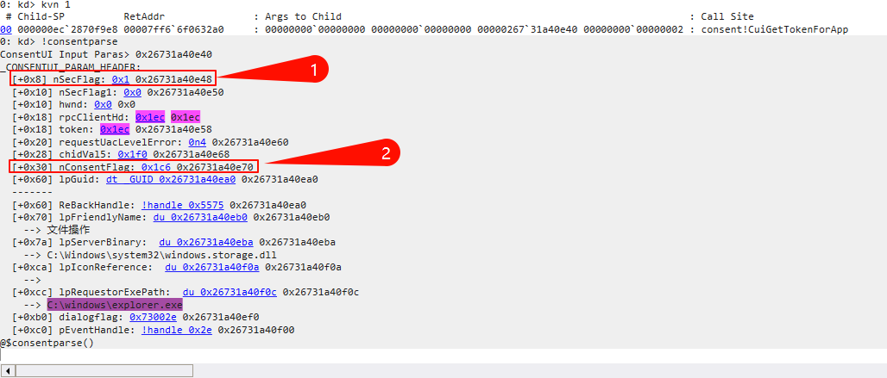
-
第一处判断
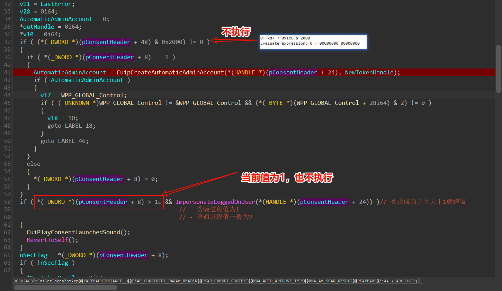
-
第二处判断
nSecFlag在 Line66 和 Line72 的两处判断都很好判断，最后执行了 Line82 复制了_CONSENTUI_PARAM_HEADER偏移 24 的 Token 句柄，此时的句柄并没有什么权限，只是复制一个主句柄到传出参数NewTokenHandle中。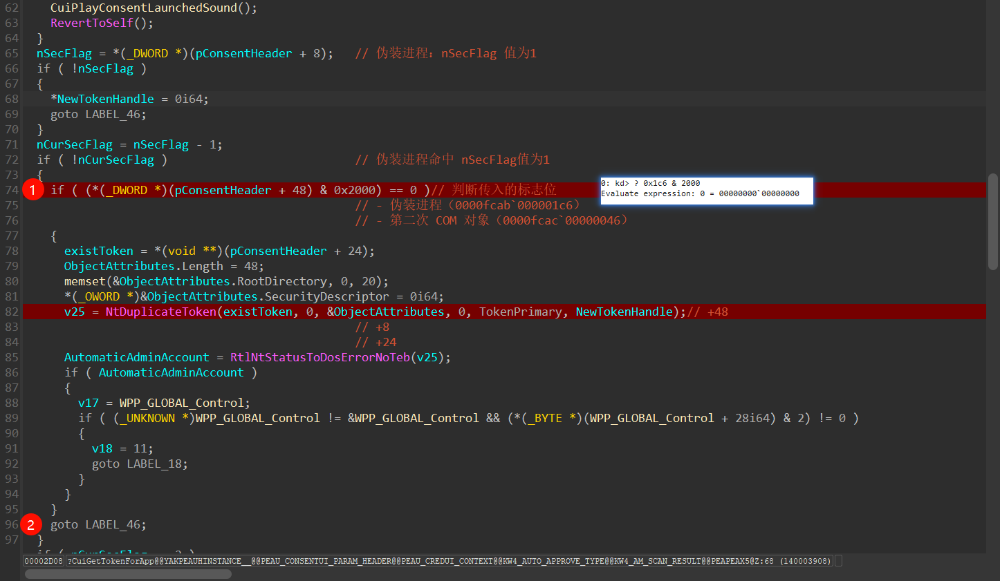
可以看下输入句柄与输出句柄的对比，除了 Token ID 以外，其他内容是一样的。
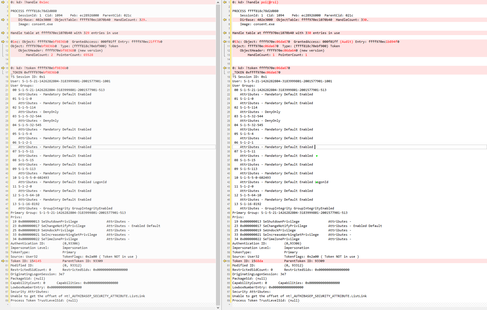
从 CuiGetTokenForApp 返回后，执行情况如下所示，直接跳转到标记2：
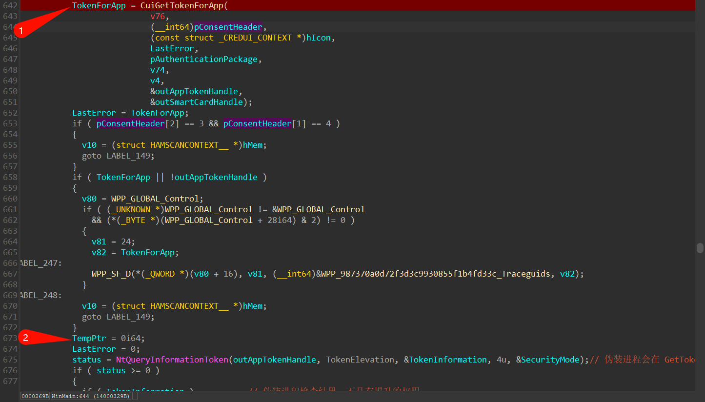
在 WinMain 执行到 NtQueryInformationToken 接口，第一个 NtQueryInformationToken 查询结果为空，所以最终会调用第二个 NtQueryInformationToken。这一步简直大变活人。从一个没有管理员权限的句柄，Link 出来了一堆权限。
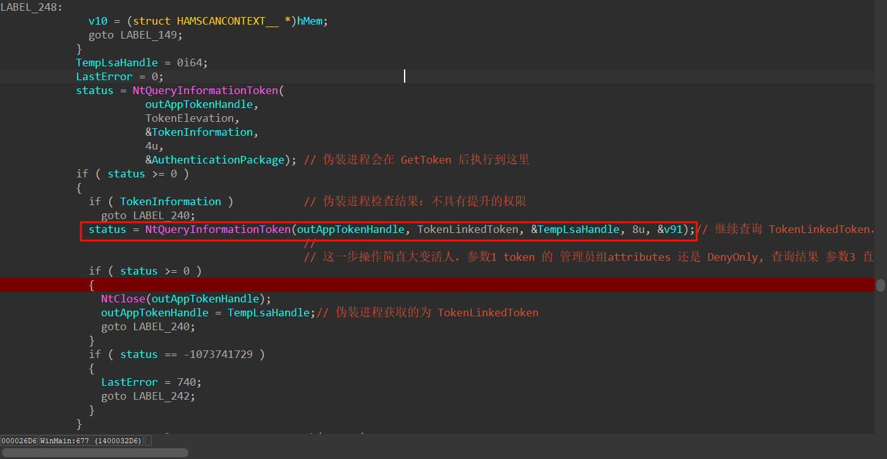
执行 TokenLinkedToken 前后的句柄变化如下所示，参考下图，左边是参数1，右边是参数3：
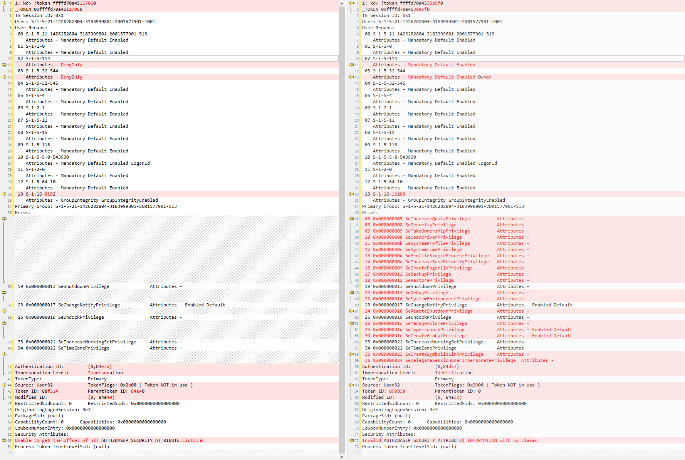
关于上述的 NtQueryInformationToken 调用 TokenLinkedToken 后 Token 权限更新，这里涉及多个知识点。
相关文章：
TokenLinkedToken
TokenLinkedToken简单理解就是要获得与当前进程关联的 Token，或者将两个 Token 关联起来。Opens a copy of a token from the linked logon session or links logon sessions of the two tokens.
关键点：
管理员进程下，可以使用
TokenLinkedToken获得一个标准用户进程。实现所谓的降权。除此之外，在普通权限情况下，当然也可以实提权（准确说是将权限调整到管理员权限）的操作，但是该操作必须是当前进程具有
SeTcbPrivilege权限，而SeTcbPrivilege权限是SYSTEM用户的权限。简单说，SYSTEM用户的权限是高于管理员权限的。如果想要在系统服务中以管理员权限创建一个进程，那么这时候可以先获得一个普通用户的权限，再通过TokenLinkedToken就可以创建一个管理员权限。补充：
结合上图可以看到在
TokenLinkedToken之后令牌 Level 由Impersonation变为了Identification。当调用进程具有SeTcbPrivilege权限时，将返回一个令牌，否则返回一个标令牌。
提权操作结束后，调用 NtWriteVirtualMemory 将 Token 写回给 appinfo 进程传入的结构体中

流程总结
大致流程如下所示：
flowchart TD A[伪装进程] --> |RPC调用|A1 A1[rpcss!connect] --> |RPC 调用|B B[appinfo!RAiGetTokenForCOM]-->|"构建 Consent 参数，传递路径"|C1 C1[AipGetTokenForService] --> C2 C2[AiCheckSecureApplicationDirectory] --> C C[appinfo!AiLaunchConsentUI]-->D D[consent!CuiCheckElevationAutoApprovalMedium] --> D1 D1[consent!CuiGetTokenForApp]--> |传入 _CONSENTUI_PARAM_HEADER 参数|E E[consent!NtQueryInformationToken] --> |TokenLinedToken| F F[consent!NtWriteVirtualMemory] --> |写回到 _CONSENTUI_PARAM_HEADER+0x38| G G[appinfo!NtDuplicateObject]--> |AipGetTokenForService+334|H[...]
到这里可以就整个流程完事了。可以看到决定直接写回 Token 操作的主要还是取决于 _CONSENTUI_PARAM_HEADER 的几个成员：
- offset+0x8 条件1：
- offset+0x30 条件2：
条件1
条件1满足的其中一个条件是条件2满足，另外一个则需要进入到 consent 进程后再看了，因为在 consent!CuipGetParameters 解析参数后，+8 偏移处的值仍为2。
只有这一处给 offset+0x8 赋值为 1，而 nAutoApprove 则是通过 CuiCheckElevationAutoApprovalMedium 获取的。

调用 CuiCheckElevationAutoApprovalMedium 函数以及返回值赋值：

CuiCheckElevationAutoApprovalMedium 函数执行逻辑：

-
标记1：
*((_DWORD *)consentHeader + 1)执行偏移为 4 处，从RAiGetTokenForCOM请求来的值都为1
-
标记2：调用的 COM 对象 GUID 为
3AD05575-8857-4850-9277-11B85BDB8E09，是否可自动提升查询注册表SOFTWARE\Microsoft\Windows NT\CurrentVersion\UAC\COMAutoApprovalList\{GUID}即可
条件2
条件2很好满足，只要是从 RAiGetTokenForCOM 接口请求过去的都满足，如下图所示：


总结
通过 RAiGetTokenForCOM 伪装成系统路径，获取
第二次 UAC
第二次 UAC 为常规操作，这里主要记录下发起方。
第二次 UAC 由执行文件操作的 COM 对象发起，也就是 windows.storage.dll
C:\Windows\SysWOW64\DllHost.exe /Processid:{3AD05575-8857-4850-9277-11B85BDB8E09}而上述所示的 DLLHost 则由 DcomLaunch 进程创建。
C:\Windows\system32\svchost.exe -k DcomLaunch -p在上述过程中应该是涉及了第二次 RPC 请求，伪装进程通过 RPC 请求到 DcomLaunch ， DcomLaunch 进程在收到相关请求后创建了 DLLHost 进程。
伪装进程与第一次不同的地方在于调用 AiCheckSecureApplicationDirectory 时传递的参数不同，第二次 COM 对象传递的是伪装进程的真是路径，而第一次则是 PEB 中修改的路径。
COM 调用堆栈如下所示
相关分析文章
如下所示为启动一个 uac 进程到该进程发起 rpc 的调用堆栈，须知当前进程的提权是通过 RPC 调用到 Appinfo 服务的。流程如下：
- uac 通过 RPC 请求到 AppInfo 服务
- APPInfo 通过
AiLaunchProcess接口创建consent.exe进程，调用时会传入一个结构体地址，调用命令行为consent.exe ppid 结构体长度 结构体地址 - consent.exe 会根据用户操作将结果写入结构体中。
修改 PEB 伪装时堆栈如下所示：
[0x0] RPCRT4!LRPC_BASE_CCALL::DoAsyncSend 0x291e17c 0x752cda21
[0x1] RPCRT4!LRPC_CCALL::AsyncSend+0x61 0x291e180 0x752cd30e
[0x2] RPCRT4!I_RpcSend+0x7e 0x291e19c 0x74e87d8d
[0x3] combase!CAsyncCall::RpcSendRequest+0xcc 0x291e1cc 0x74e3d579
[0x4] combase!ThreadSendReceive+0xd9 0x291e30c 0x74dfc8f6
[0x5] combase!CSyncClientCall::SwitchAptAndDispatchCall+0x31c 0x291e30c 0x74dfc8f6
[0x6] combase!CSyncClientCall::SendReceive2+0x579 0x291e30c 0x74dfc8f6
[0x7] combase!SyncClientCallRetryContext::SendReceiveWithRetry+0x3c 0x291e4a0 0x74dfc885
[0x8] combase!CSyncClientCall::SendReceiveInRetryContext+0x2a 0x291e4c0 0x74dfc831
[0x9] combase!ClassicSTAThreadSendReceive+0x51 0x291e4e4 0x74e3abce
[0xa] combase!CSyncClientCall::SendReceive+0x44e 0x291e5a4 0x74de94f4
[0xb] combase!CClientChannel::SendReceive+0x75 0x291e710 0x752a69e9
[0xc] combase!NdrExtpProxySendReceive+0xc4 0x291e710 0x752a69e9
[0xd] RPCRT4!NdrClientCall2+0xb09 0x291e738 0x74ece96a
[0xe] combase!ObjectStublessClient+0xaa 0x291ebc8 0x74ec68bf
[0xf] combase!ObjectStubless+0xf 0x291ebe8 0x74e26efa
[0x10] combase!CRpcResolver::DelegateActivationToSCM+0x2eb 0x291ebf8 0x74e114e8
[0x11] combase!CRpcResolver::CreateInstance+0x14 0x291ed00 0x74e11484
[0x12] combase!CClientContextActivator::CreateInstance+0x144 0x291ed1c 0x74e112be
[0x13] combase!ActivationPropertiesIn::DelegateCreateInstance+0x7e 0x291ed68 0x74e4f518
[0x14] combase!ICoCreateInstanceEx+0x968 0x291edb4 0x74e4fdfa
[0x15] combase!CComActivator::DoCreateInstance+0x22a 0x291f740 0x74e50101
[0x16] combase!CoCreateInstanceEx+0x130 0x291f814 0x6acb5269
[0x17] combase!CoCreateInstance+0x191 0x291f814 0x6acb5269
[0x18] apphelp!InsHook_CoCreateInstance+0x39 0x291f870 0x7296f400
[0x19] windows_storage!CSearchIndexNotificationQueue::s_FlushNotificationQueueThreadProc+0x50 0x291f8c0 0x76baf8f9
CoGetObject的创建管理员对象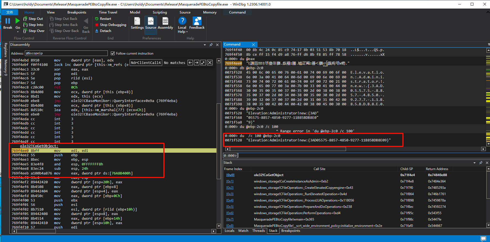
在创建 COM 对象时，会调用 dllHost 来创建另一个进程：
C:\WINDOWS\system32\DllHost.exe /Processid:{3AD05575-8857-4850-9277-11B85BDB8E09}在注册表可以看到该 CLSID 的一些信息如下所示：
reg hkey_classes_root\CLSID\{3AD05575-8857-4850-9277-11B85BDB8E09}
到达 AppInfo 后， 调用堆栈如下所示：
[0x0] ntdll!NtCreateUserProcess 0xdf231fc698 0x7ff9da72b473
[0x1] KERNELBASE!CreateProcessInternalW+0xfe3 0xdf231fc6a0 0x7ff9da728a03
[0x2] KERNELBASE!CreateProcessAsUserW+0x63 0xdf231fdc70 0x7ff9daa4de30
[0x3] KERNEL32!CreateProcessAsUserWStub+0x60 0xdf231fdce0 0x7ff9d4a4526b
[0x4] appinfo!AiLaunchProcess+0x8eb 0xdf231fdd50 0x7ff9d4a4789d
[0x5] appinfo!AiLaunchConsentUI+0x51d 0xdf231fec40 0x7ff9d4a471e3
[0x6] appinfo!AiCheckLUA+0x343 0xdf231fee60 0x7ff9d4a62ff1
[0x7] appinfo!AipGetTokenForService+0x245 0xdf231ff040 0x7ff9d4a639b6
[0x8] appinfo!RAiGetTokenForCOM+0x206 0xdf231ff160 0x7ff9db4ab4b3
[0x9] RPCRT4!Invoke+0x73 0xdf231ff220 0x7ff9db50c5ea调用 RAiLaunchAdminProcess 越权
基于以上描述，我们大概了解了启动一个 UAC 进程的流程和过程。那么，到底是在哪一步判断中进程的 UAC 鉴权操作。
处理逻辑：AIS(appinfo.dll) 服务：处理提升请求
主要看一下 通过 RAiLaunchAdminProcess 发起 UAC 请求的处理。以下 2 种情况可能不会弹 UAC 对话框，会自动提升至管理员权限（越权也是基于白名单）：
UAC 流程
简单说明一下 UAC 的请求流程。
- 程序配置为自动提升
如果程序中配置了 autoElevate 为 true，会尝试自动提升
1. 先判断是否限制自动提权策略

2. 判断是否设置了 autoElevate

- 白名单
判断要执行的程序是否属于白名单，在白名单之内就调用 AipIsValidAutoApprovalEXE 函数检查 程序签名 等信息，如果不在就基本结束这个函数了

依靠上述两个判断还是不够的，在 appinfo 中还有如下所示的几个列表。
-
g_lpExcludedWindowsDirs
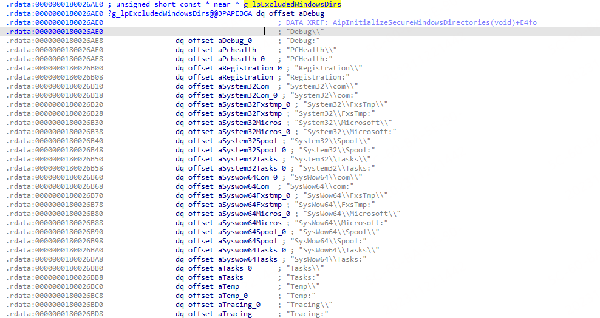
-
g_lpIncludedWindowsDirs
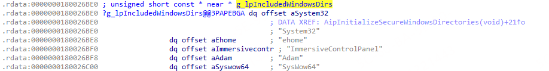
-
g_lpIncludedSystemDirs
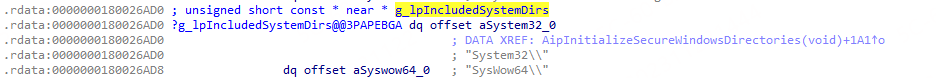
-
g_lpIncludedPFDirs
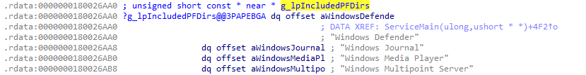
弹窗逻辑
但是中间弹窗的过程被省略了，这里可以调试分析一下。主要就是通过查看 COM 组件有没有自提升权限进而判断是否需要弹窗，查看 CuIISCOMClassAutoApprovable 即可。
越权逻辑
越权主要还是基于以下两点:
-
各类 UAC 白名单程序的 DLL 劫持（Dll Hijack）
-
各类提升权限的 COM 接口利用（Elevated COM interface）
可利用的 COM 接口有哪些，可以在
HKEY_LOCAL_MACHINE\\SOFTWARE\\Microsoft\\Windows NT\\CurrentVersion\\UAC\\COMAutoApprovalList注册表下查看值为 键值项为 1 的项为可以自提升的。
本文伪装 PEB 所示的代码通过白名单 g_lpIncludedSystemDirs 和 提升权限的 COM 接口实现。
检查的堆栈为：
appinfo! RAiGetTokenForCOM -> appinfo! AipGetTokenForService(或者 AipGetTokenForService) -> appinfo! AiCheckSecureApplicationDirectory -> appinfo! AIPCheckSecureWindowsDirectory 或者 AIPCheckSecurePFDirectory(取决于传递的路径)

修改为 C:\windows\explorer.exe 之后，其相当于从白名单启动的进程，因此可以绕过 consent，直接获取权限。
文件启动路径
获取程序运行路径的堆栈
[0x0] combase!<lambda_7438a189e512c84b56128b16ff6946f3>::operator()+0x9d 0x71d5d8 0x75070f45
[0x1] combase!CRpcResolver::GetConnection+0x70 0x71db48 0x75051915
[0x2] combase!CoInitializeSecurity+0xe5 0x71db78 0x750ed384
[0x3] combase!InitializeSecurity+0x4f 0x71ddec 0x7509196b
[0x4] combase!CComApartment::InitRemoting+0x8d 0x71de20 0x750b1ce2
[0x5] combase!CComApartment::StartServer+0x60 0x71de64 0x7506dd3d
[0x6] combase!InitChannelIfNecessary+0xb2 0x71de64 0x7506dd3d
[0x7] combase!CGIPTable::RegisterInterfaceInGlobalHlp+0x4d 0x71de80 0x7506dce5
[0x8] combase!CGIPTable::RegisterInterfaceInGlobal+0x15 0x71dec0 0x7453b91b
[0x9] windows_storage!CFreeThreadedItemContainer::Initialize+0x8b 0x71ded8 0x7453b1b0
[0xa] windows_storage!CFSPropertyStoreFactory_CreateInstance+0x360 0x71df0c 0x7451ab6b
[0xb] windows_storage!CFSFolder::_BindToChild+0x10e 0x71e15c 0x7454e000
[0xc] windows_storage!CFSFolder::_Bind+0xa10 0x71e928 0x7454d279
[0xd] windows_storage!CFSFolder::BindToObject+0x4c9 0x71ec3c 0x74562745
[0xe] windows_storage!CShellItem::BindToHandler+0x525 0x71ef1c 0x7455e92e
[0xf] windows_storage!CShellItem::_GetPropertyStoreWorker+0x2ee 0x71f1ec 0x7457313d
[0x10] windows_storage!CShellItem::GetPropertyStoreForKeys+0x11d 0x71f260 0x745a1977
[0x11] windows_storage!CShellItem::GetString+0x57 0x71f4e8 0x745a18e3
[0x12] windows_storage!IShellItem_GetFileName+0x5b 0x71f530 0x745a0934
[0x13] windows_storage!CPendingOperation::AddToTree+0x114 0x71f55c 0x745a07fb
[0x14] windows_storage!CCopyTree::InitializeFromPendingList+0x9a 0x71f7b0 0x7459224f
[0x15] windows_storage!CFileOperation::PerformOperations+0xaf 0x71f7d4 0x543f55
[0x16] MasqueradePEBtoCopyfile!wmain+0x365 0x71f818 0x5447fe
[0x17] MasqueradePEBtoCopyfile!__scrt_wide_environment_policy::initialize_environment+0x2e 0x71f97c 0x544667
[0x18] MasqueradePEBtoCopyfile!__crt_char_traits<wchar_t>::tcscpy_s<wchar_t * &,unsigned int,wchar_t const * const &>+0x1d7 0x71f990 0x5444fd
[0x19] MasqueradePEBtoCopyfile!__crt_char_traits<wchar_t>::tcscpy_s<wchar_t * &,unsigned int,wchar_t const * const &>+0x6d 0x71f9ec 0x544878
[0x1a] MasqueradePEBtoCopyfile!wmainCRTStartup+0x8 0x71f9f4 0x7612fcc9
[0x1b] KERNEL32!BaseThreadInitThunk+0x19 0x71f9fc 0x76fd7c6e
[0x1c] ntdll!__RtlUserThreadStart+0x2f 0x71fa0c 0x76fd7c3e
[0x1d] ntdll!_RtlUserThreadStart+0x1b 0x71fa68 0x0 
获取 dll 的堆栈
[0x0] ntdll!LdrGetDllFullName 0x71d974 0x76de5a56
[0x1] KERNELBASE!GetModuleFileNameW+0x46 0x71d978 0x750ff6ee